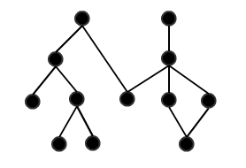

PHP-DI works with PHP 5.3 or higher. But seriously, use 5.5 or even 5.6.
The easiest way is to install PHP-DI with Composer.
Create a file named composer.json in your project root:
{
"require": {
"mnapoli/php-di": "~4.0"
}
}Then, run the following commands:
$ curl -s http://getcomposer.org/installer | php
$ php composer.phar installIf you don't use Composer, you can directly download the sources and configure it with your autoloader.
You have to define a dependency graph between your objects, which we can represent like so (nodes are objects, links are dependencies):

PHP-DI offers several ways to define dependencies, so use which ones you like.
Below is a quick introduction to some options, but you can also read the full documentation.
PHP-DI can use PHP Reflection to understand what parameters a constructor needs:
class Foo {
private $bar;
public function __construct(Bar $bar) {
return $this->bar = $bar;
}
}PHP-DI will know that it should inject an instance of the Bar interface or class.
No configuration needed!
Of course, this comes with limitations:
However, autowiring generally covers 80% of the cases.
You can also use annotations to define injections, here is a short example:
<?php
class Foo {
/**
* @Inject
* @var Bar
*/
protected $bar;
/**
* @Inject
*/
public function setBaz(Baz $bin) {
}
/**
* @Inject({"db.host", "db.port"})
*/
public function setValues($param1, $param2) {
}
}See also the complete documentation about annotations.
You can define injections with a PHP array too (this example uses PHP 5.4 and 5.5 features):
<?php
return [
// Values
'db.host' => 'localhost',
'db.port' => 5000,
// Class
MyDbAdapter::class => DI\object()
->constructor(DI\link('db.host'), DI\link('db.port')),
];See also the complete documentation about array configuration.
You need to configure the container to import this file:
$builder = new ContainerBuilder();
$builder->addDefinitions('config.php');
$container = $builder->build();$foo = $container->get('Foo');But wait! Do not use this everywhere because this makes your code dependent on the container. This is an antipattern to dependency injection (it is like the service locator pattern: dependency fetching rather than injection).
So PHP-DI container should be called at the root of your application (in your Front Controller for example). To quote the Symfony docs about Dependency Injection:
You will need to get [an object] from the container at some point but this should be as few times as possible at the entry point to your application.
For this reason, we are trying to provide integration with MVC frameworks (see below).
To sum up:
$container->get() in you root application class or front controller$container->get() in your controllers (but avoid it in your services) but keep in mind that your controllers will be dependent on the containerYou can head over to the documentation index.
You can also read the Best practices guide, it's a good way to get a good view on when to use each of PHP-DI's features.
Here are some other topics that might interest you right now: